Prepare-se para descobrir usos insanos que podem otimizar seu trabalho e potencializar seus resultados, tudo isso enquanto você aprende a usar essa tecnologia inovadora.
Table of Contents
- Passo 1: Introdução ao ChatGPT Deep Research 🚀
- Passo 2: O que é o ChatGPT Deep Research? 🤖
- Passo 3: Aprendendo a usar Google ADS com IA 📈
- Passo 4: Superando pesquisas médicas com assistente de IA 🏥
- Passo 5: Criando um plano de estudo para desenvolvimento de jogos 🎮
- Passo 6: Gerando relatórios personalizados de notícias 📰
- Passo 7: Criando tabelas comparativas com dados organizados 📊
- Passo 8: Gerando teses acadêmicas com IA 📚
- Passo 9: CEO’s utilizando IA para decisões estratégicas 💼
- Passo 10: Transformando posts de redes sociais em conteúdos robustos ✍️
- Passo 11: Encontrando livros e referências com IA 📖
- Passo 12: O futuro da IA no desenvolvimento e design 🌐
- Passo 13: Como você usaria a IA no seu dia a dia? 💡
- FAQ: Perguntas Frequentes sobre Inteligência Artificial e Desenvolvimento ❓
Passo 1: Introdução ao ChatGPT Deep Research 🚀
O ChatGPT Deep Research está mudando a forma como interagimos com a tecnologia. É como ter um assistente pessoal que não apenas responde perguntas, mas também fornece soluções práticas e aplicáveis para uma variedade de situações. Neste primeiro passo, vamos entender o que é essa ferramenta e como ela pode ser um divisor de águas na sua rotina.
Imagine ter acesso a um conhecimento vasto e atualizado, capaz de te ensinar habilidades valiosas em tempo recorde. O ChatGPT Deep Research pode fazer isso e muito mais, tornando o aprendizado mais acessível e menos demorado. Com ele, você pode transformar suas ideias em realidade de forma rápida e eficiente.
Por que o ChatGPT Deep Research é tão revolucionário?
A tecnologia de inteligência artificial está avançando a passos largos e o ChatGPT Deep Research é um exemplo perfeito disso. Ele não só compreende suas perguntas, mas também aprende com suas interações, melhorando cada vez mais suas respostas. Isso permite que você obtenha informações mais precisas e relevantes para suas necessidades.
Além disso, a democratização do acesso à informação é um dos pontos mais impactantes. Qualquer pessoa, independentemente do seu nível de conhecimento, pode usar essa ferramenta para aprender, pesquisar ou até mesmo implementar estratégias de marketing digital, tornando-se um competidor à altura de grandes empresas.
Passo 2: O que é o ChatGPT Deep Research? 🤖
O ChatGPT Deep Research é uma versão avançada do ChatGPT, projetada para oferecer respostas mais profundas e contextualizadas. Ele foi desenvolvido para atender a uma ampla gama de necessidades, desde pesquisas acadêmicas até estratégias de marketing.
Com a capacidade de entender e processar grandes volumes de informações, ele se destaca por fornecer insights que podem ser aplicados em tempo real. Imagine ter acesso a um assistente que pode te ajudar a construir campanhas publicitárias no Google ADS ou até mesmo sugerir tratamentos médicos com base em dados complexos.
Funcionalidades principais
- Aprendizado contínuo: A IA aprende com cada interação, tornando suas respostas cada vez mais precisas.
- Capacidade de pesquisa: Ideal para quem precisa de informações rápidas e confiáveis.
- Personalização: Pode ser ajustado para atender às suas necessidades específicas, seja em marketing, saúde ou educação.
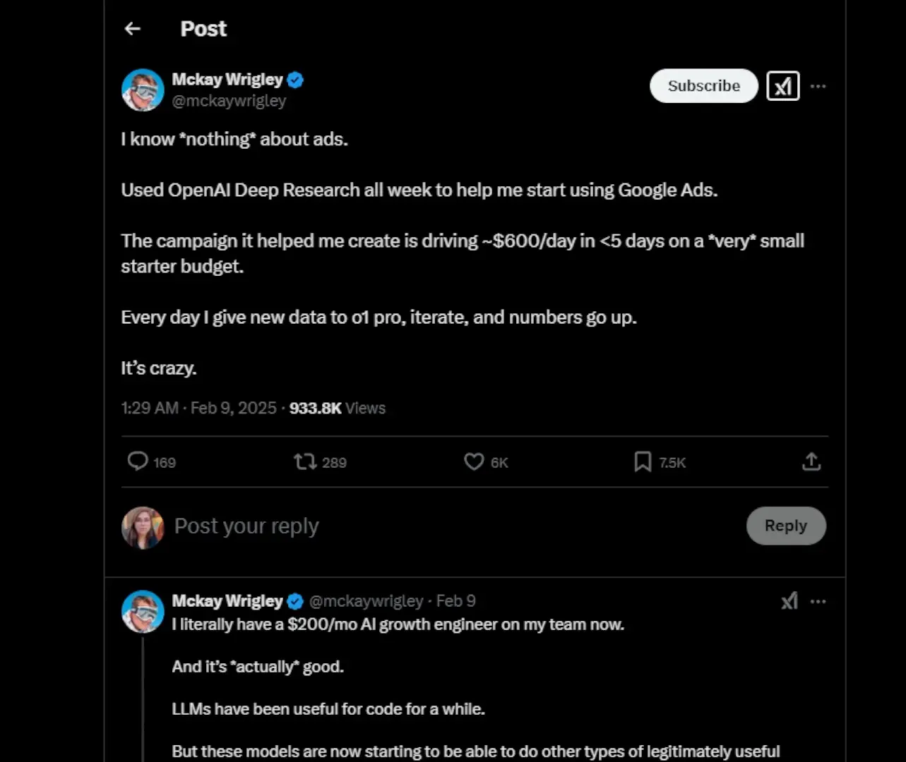
Passo 3: Aprendendo a usar Google ADS com IA 📈
Um dos usos mais impressionantes do ChatGPT Deep Research é na área de marketing digital, especialmente na criação e gestão de campanhas no Google ADS. Imagine que você não tem experiência e, em menos de uma semana, consegue faturar seiscentos dólares por dia! Isso foi exatamente o que aconteceu com um usuário que decidiu testar essa ferramenta.
Ele começou com um orçamento pequeno e, com a ajuda da IA, ajustou suas campanhas diariamente, o que resultou em um crescimento significativo nos lucros. O melhor de tudo é que ele não precisou de um especialista para guiá-lo, pois a IA atuou como um engenheiro de crescimento, otimizando suas estratégias.
Como começar?
- Defina seus objetivos: O que você quer alcançar com sua campanha?
- Configure sua conta: Crie uma conta no Google ADS e conecte-se ao ChatGPT Deep Research.
- Peça ajuda: Pergunte à IA como estruturar sua campanha, desde a escolha de palavras-chave até a definição de orçamentos.
- Monitore e ajuste: Use os insights da IA para ajustar suas campanhas em tempo real.
Passo 4: Superando pesquisas médicas com assistente de IA 🏥
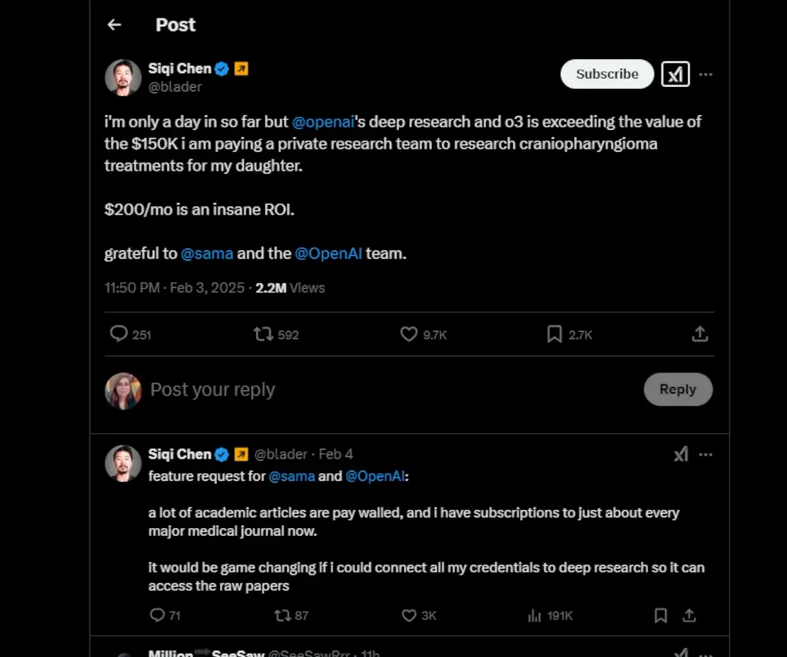
A área da saúde é um dos setores que mais se beneficia do ChatGPT Deep Research. Recentemente, um usuário que gastava cento e cinquenta mil dólares em pesquisas médicas decidiu testar a IA. O resultado? Em apenas um dia, a IA superou os insights da equipe que ele estava pagando.
Isso demonstra não apenas a eficiência da tecnologia, mas também como ela pode democratizar o acesso à informação médica. Muitas pessoas não têm condições de pagar por pesquisas especializadas, mas agora, com a IA, qualquer um pode encontrar informações complexas e até sugestões de tratamentos.
Benefícios da IA na saúde
- Acesso a informações: Qualquer pessoa pode acessar dados médicos complexos.
- Interpretação de dados: A IA pode ajudar a interpretar resultados e sugerir novas abordagens.
- Economia de tempo e dinheiro: Reduz custos com pesquisas e acelera o processo de obtenção de respostas.
Passo 5: Criando um plano de estudo para desenvolvimento de jogos 🎮
O ChatGPT Deep Research também é uma ferramenta poderosa para quem deseja aprender a desenvolver jogos. Um usuário pediu à IA um plano de estudo passo a passo para criar jogos de terror na engine God of War e recebeu exatamente o que precisava.
Com um guia bem estruturado, incluindo referências, tutoriais e dicas, ele agora tem um caminho claro a seguir. Antes, quem queria aprender sobre desenvolvimento de jogos passava horas filtrando conteúdos na internet. Agora, a IA faz essa curadoria por você!
Como usar a IA para aprender desenvolvimento de jogos?
- Defina suas metas: Que tipo de jogo você quer desenvolver?
- Peça um plano: Solicite à IA um plano de estudo adaptado às suas necessidades.
- Estude com foco: Siga o guia e utilize os recursos indicados pela IA.
- Pratique: Aplique o que aprendeu em projetos reais.
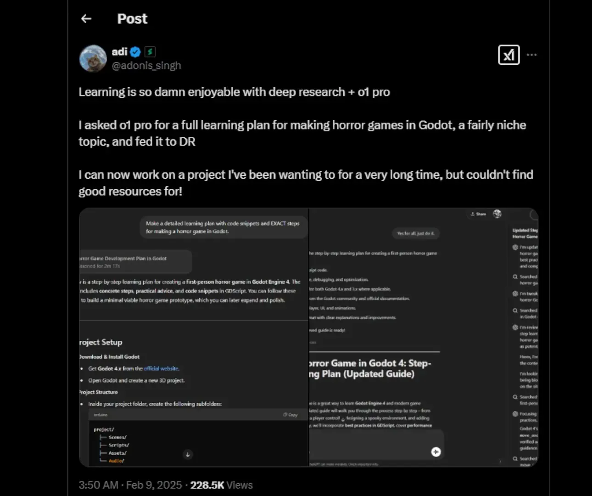
Passo 6: Gerando relatórios personalizados de notícias 📰
Com a sobrecarga de informações que enfrentamos diariamente, ter um assistente de IA que pode filtrar e organizar notícias é um verdadeiro divisor de águas. O ChatGPT Deep Research permite que você crie relatórios diários totalmente personalizados, adaptados aos seus interesses e necessidades.
Para começar, você só precisa informar à IA quais são suas áreas de interesse, as fontes que você confia e seu nível de conhecimento sobre cada tema. Além disso, você pode escolher o formato que prefere, seja um resumo curto ou uma análise detalhada.
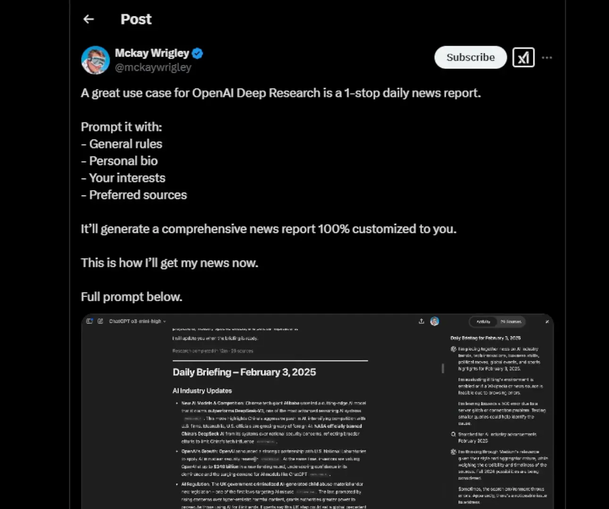
Como configurar seus relatórios
- Defina seus interesses: Quais tópicos você quer que a IA cubra?
- Escolha suas fontes: Quais sites ou publicações você considera confiáveis?
- Determine o formato: Prefere resumos rápidos ou análises mais profundas?
- Peça à IA: Solicite que ela compile as informações e entregue o relatório.
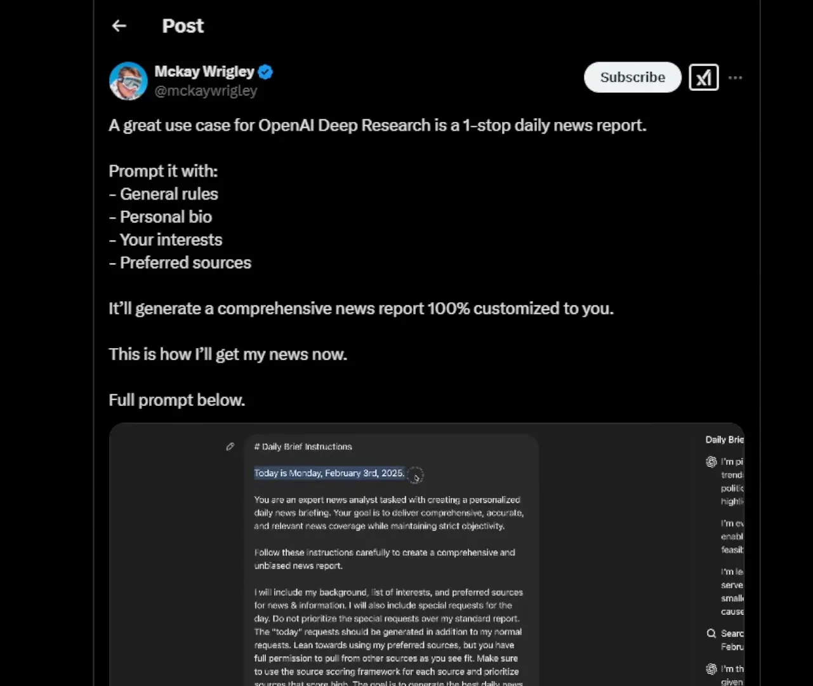
Com essa ferramenta, você não apenas economiza tempo, mas também garante que está consumindo apenas o conteúdo que realmente importa para você. Não há mais necessidade de navegar por milhares de artigos irrelevantes. A IA faz esse trabalho pesado, permitindo que você se concentre no que é essencial.
Passo 7: Criando tabelas comparativas com dados organizados 📊
A organização de dados é fundamental em muitas áreas, e o ChatGPT Deep Research pode facilitar enormemente essa tarefa. Imagine a cena: você precisa criar uma tabela comparativa das vinte e cinco arquiteturas de chip mais importantes da história. Antes, isso poderia levar horas de pesquisa e compilação. Agora, com a IA, esse trabalho pode ser feito em segundos.
Como solicitar uma tabela comparativa
- Defina o escopo: Quais dados você precisa comparar?
- Peça à IA: Solicite que ela crie uma tabela com as colunas necessárias.
- Revise e ajuste: Verifique a tabela gerada e faça ajustes se necessário.
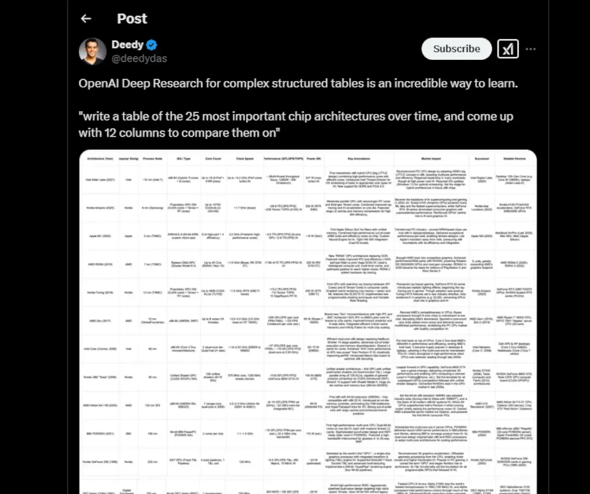
Essa abordagem não só economiza tempo, mas também aumenta a precisão e a eficiência na apresentação de dados. Pesquisadores, analistas e estudantes podem se beneficiar enormemente, pois agora é possível comparar grandes quantidades de informações de maneira rápida e eficaz.
Passo 8: Gerando teses acadêmicas com IA 📚
A inteligência artificial também está desafiando as normas acadêmicas. Um exemplo interessante foi quando alguém pediu ao ChatGPT Deep Research para gerar uma tese sobre ética auditiva. O resultado não apenas foi convincente, mas levantou questões importantes sobre a validade do trabalho acadêmico gerado por IA.
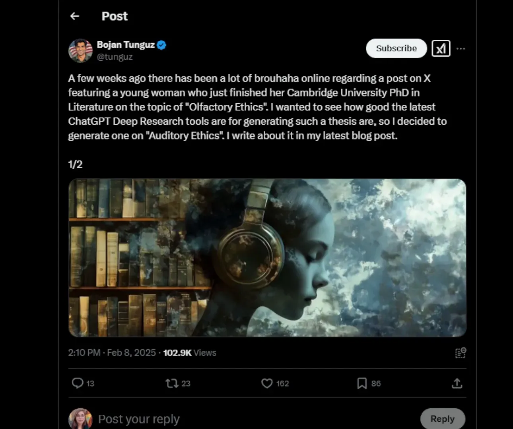
Como usar a IA para teses acadêmicas
- Escolha o tema: Qual é o assunto da sua tese?
- Peça à IA: Solicite que ela desenvolva uma estrutura básica e conteúdos relevantes.
- Revise o conteúdo: Analise o que foi gerado e faça ajustes conforme necessário.
Esse uso da IA pode mudar a forma como encaramos a pesquisa acadêmica. Será que as universidades precisam repensar seus métodos de avaliação? A linha entre o que é escrito por humanos e o que é gerado por máquinas está se tornando cada vez mais tênue.
Passo 9: CEO’s utilizando IA para decisões estratégicas 💼
A utilização de IA não se limita a tarefas operacionais. CEOs de grandes empresas, como Patrick Collison da Stripe, estão usando o ChatGPT Deep Research para receber relatórios personalizados. Isso significa que eles não precisam mais gastar horas filtrando informações de múltiplas fontes.
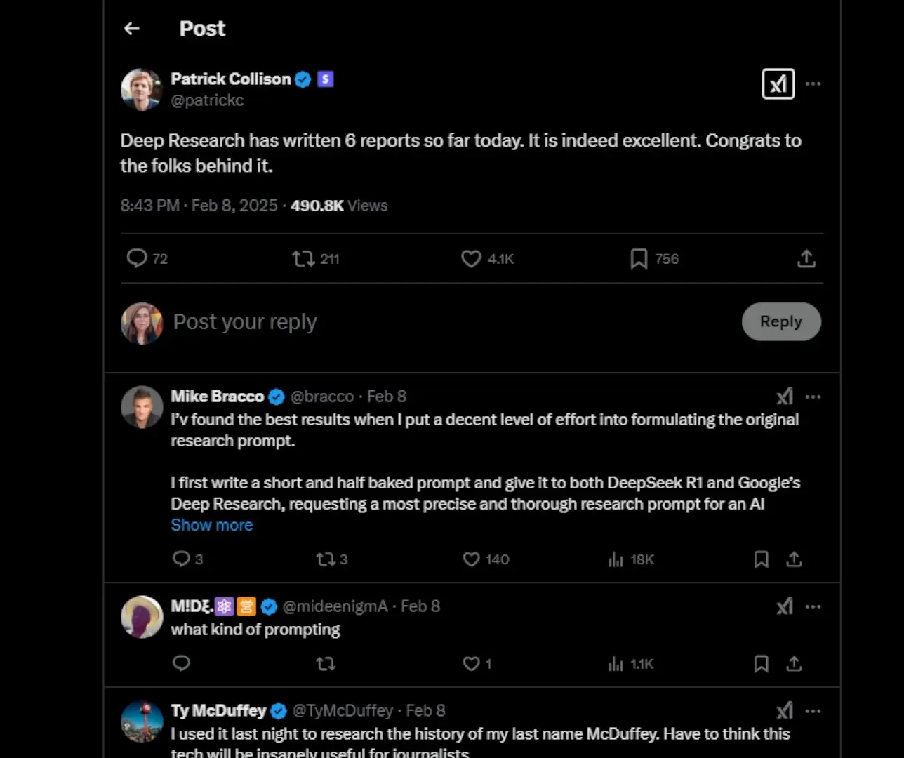
Como os CEOs podem se beneficiar da IA
- Defina suas necessidades: Que tipo de informações você precisa compilar?
- Peça à IA: Solicite um resumo ou relatório sobre os tópicos relevantes.
- Utilize os insights: Use as informações para tomar decisões estratégicas informadas.
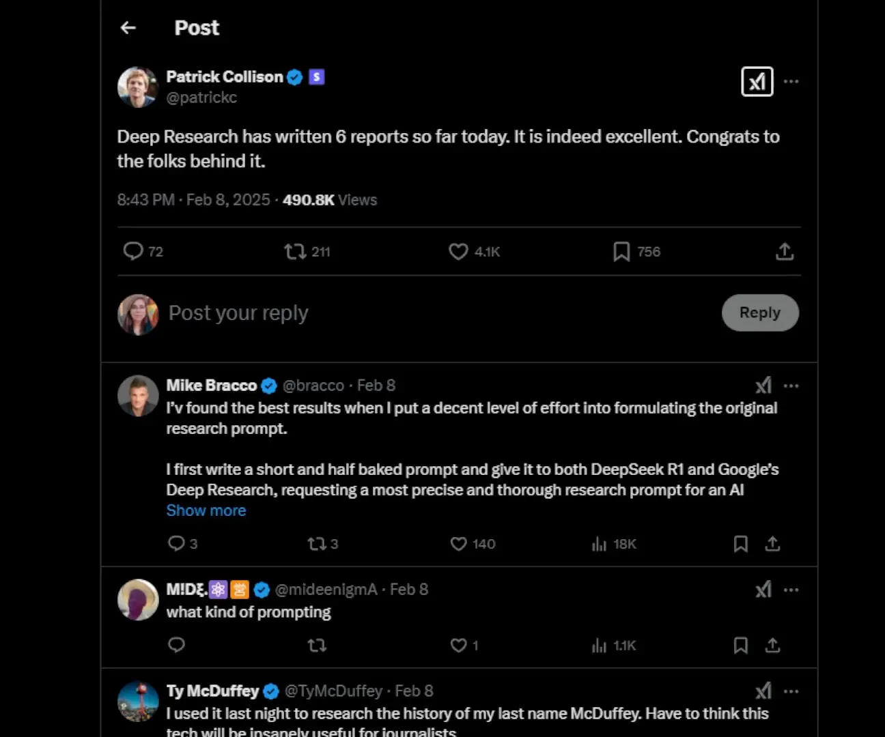
Isso muda a dinâmica de tomada de decisão nas empresas. Com a IA, pequenos empresários podem competir em pé de igualdade com grandes corporações, tendo acesso ao mesmo nível de inteligência estratégica e informações aprofundadas.
Passo 10: Transformando posts de redes sociais em conteúdos robustos ✍️
A capacidade de transformar conteúdos fragmentados em materiais mais profundos é uma das funcionalidades mais valiosas do ChatGPT Deep Research. Um exemplo prático é o caso de alguém que pegou vários posts do Twitter e os transformou em artigos econômicos completos. A IA organizou os pensamentos de forma coesa e lógica.
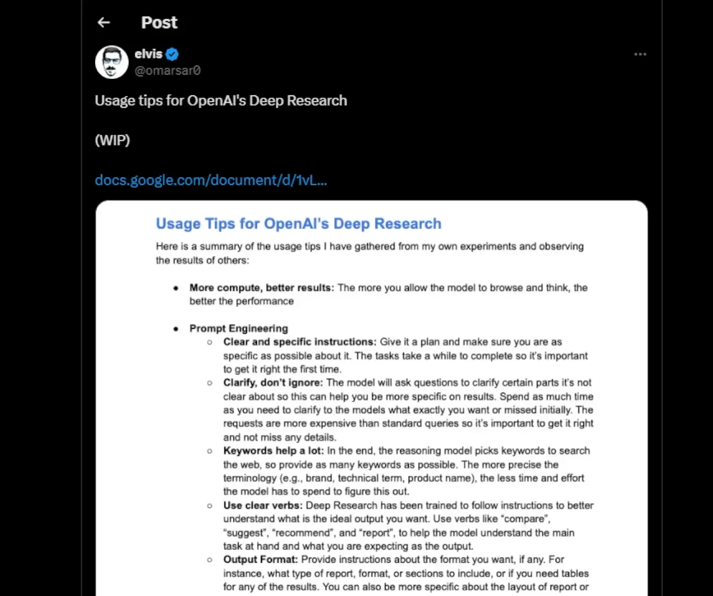
Como transformar conteúdo com a IA
- Coleta de conteúdo: Reúna seus posts e ideias soltas.
- Peça à IA: Solicite que ela organize e estruture os conteúdos em um artigo.
- Revise e publique: Faça ajustes finais e publique seu novo conteúdo.
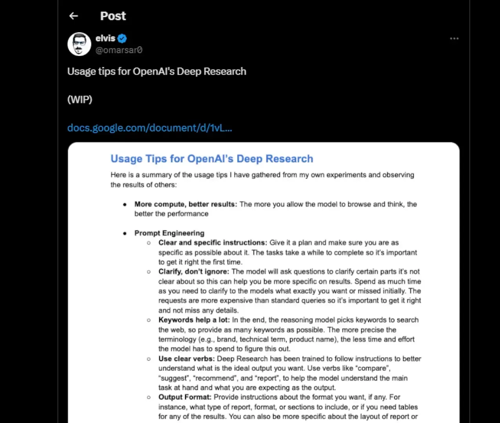
Essa ferramenta não apenas ajuda a reciclar conteúdos antigos, mas também gera novas ideias a partir do que já foi escrito. Isso é especialmente útil para criadores de conteúdo que buscam maximizar sua produtividade e eficiência.
Passo 11: Encontrando livros e referências com IA 📖
Encontrar um livro específico pode ser um desafio, especialmente quando você não se lembra do título ou do autor. Imagine ter uma assistente de IA que pode ajudar a localizar obras obscuras baseadas apenas em descrições vagas. Isso já é possível com o ChatGPT Deep Research.
Por exemplo, uma pessoa conseguiu encontrar um livro que lembrava apenas de um resumo genérico do enredo e alguns elementos marcantes. A IA fez o trabalho de identificar a obra correta, mesmo sendo uma publicação pouco conhecida com apenas onze avaliações no Goodreads.
Como usar a IA para localizar livros
- Descreva o que você lembra: Forneça à IA todos os detalhes que você consegue recordar sobre a obra.
- Peça sugestões: Pergunte à IA para ajudá-lo a encontrar o livro com base nas informações que você forneceu.
- Revise as opções: Verifique as sugestões da IA e veja se alguma delas corresponde ao que você tinha em mente.
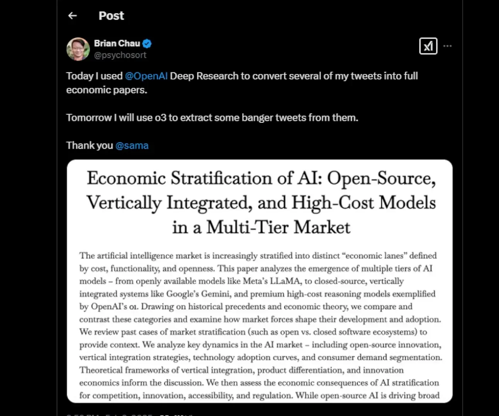
Essa capacidade de pesquisa é valiosa não apenas para leitores ávidos, mas também para acadêmicos que buscam referências específicas. Agora, encontrar livros ou artigos raros com base em descrições se tornou muito mais fácil. A IA pode ajudar em diversas áreas, como cultura pop e pesquisa histórica, tornando a busca por informações muito mais eficiente.
Passo 12: O futuro da IA no desenvolvimento e design 🌐
O futuro da inteligência artificial no desenvolvimento e design é promissor. À medida que a tecnologia avança, a IA se tornará uma aliada ainda mais poderosa para profissionais dessas áreas. Imagine uma IA que não apenas auxilia na programação, mas também sugere soluções criativas para design de interfaces.
Com ferramentas como o ChatGPT Deep Research, programadores e designers poderão obter insights valiosos em tempo real, economizando tempo e aumentando a eficiência. A colaboração entre humanos e máquinas pode resultar em produtos mais inovadores e atraentes.
Possíveis aplicações da IA no desenvolvimento e design
- Geração de código: A IA pode ajudar a escrever e otimizar código, tornando o processo de desenvolvimento mais rápido.
- Design assistido: Ferramentas de IA podem sugerir layouts, cores e elementos de design com base nas tendências atuais.
- Testes automatizados: A IA pode realizar testes de usabilidade e identificar problemas antes do lançamento de um produto.
Além disso, a IA pode democratizar o acesso ao design e desenvolvimento, permitindo que pessoas sem formação técnica possam criar aplicativos e sites de maneira intuitiva. Isso abre portas para uma nova geração de criadores e inovadores.
Passo 13: Como você usaria a IA no seu dia a dia? 💡
A aplicação da inteligência artificial no cotidiano pode variar enormemente. Desde a ajuda com tarefas simples até a otimização de processos complexos, a IA pode ser um recurso valioso. Como você imagina que poderia integrar a IA na sua rotina diária?
Algumas ideias incluem usar a IA para organizar sua agenda, automatizar tarefas repetitivas no trabalho ou até mesmo ajudar em projetos de aprendizado. A flexibilidade da IA permite que ela se adapte às suas necessidades específicas.
Exemplos de uso da IA no cotidiano
- Assistente pessoal: Organize compromissos e lembretes de forma eficiente.
- Pesquisa de informações: Encontre dados relevantes rapidamente sem perder tempo.
- Criação de conteúdo: Gere ideias para blogs, posts em redes sociais ou até mesmo artigos acadêmicos.
A IA está aqui para facilitar nossas vidas e potencializar nossas habilidades. O que você ainda não experimentou? A tecnologia está evoluindo, e as possibilidades são praticamente infinitas.
FAQ: Perguntas Frequentes sobre Inteligência Artificial e Desenvolvimento ❓
A seguir, abordaremos algumas das perguntas mais comuns relacionadas à inteligência artificial e seu impacto no desenvolvimento e design.
1. A IA pode realmente substituir humanos em tarefas criativas?
A IA pode auxiliar em tarefas criativas, oferecendo sugestões e insights. No entanto, a criatividade humana e a intuição ainda são insubstituíveis.
2. Como a IA pode melhorar a eficiência nas empresas?
A IA pode automatizar processos repetitivos, oferecer análises de dados e otimizar fluxos de trabalho, resultando em maior eficiência e redução de custos.
3. É seguro confiar em IA para decisões importantes?
Embora a IA possa fornecer dados e análises valiosas, é fundamental que humanos revisem e validem as informações antes de tomar decisões cruciais.
4. Quais são os principais desafios do uso da IA no desenvolvimento?
Os desafios incluem a necessidade de treinamento adequado, a compreensão das limitações da IA e a integração com sistemas existentes.
5. Como posso começar a usar IA no meu trabalho?
Existem diversas ferramentas disponíveis no mercado. Comece explorando aquelas que se alinham às suas necessidades e objetivos específicos.
Essas perguntas são apenas o começo. A inteligência artificial está mudando a forma como trabalhamos e interagimos com a tecnologia, e é importante estarmos informados sobre suas capacidades e limitações.